1 · Title pace (5)
Average grid P4.4, finish P3.6, 18.2 points a race, on the podium 74% of the time and only 7% retirements.
VER '21, '22, '23 · HAM '21 · PER '23
Data Science Lifecycle · CU Boulder
2021 to 2023: 66 races and 1,320 driver-races worth of grid slots, pit stops, tyres and weather. I wanted to know what actually decides where a driver finishes, so I went and pulled the data.
Bahrain International Circuit, which opened the season in all three years I looked at. The outline is the fastest lap of the 2023 race, traced from FastF1 position data.
As an F1 fan, the question I keep coming back to is how much of a result is the driver and how much is the car. Formula 1 is ten teams and twenty drivers racing more than twenty times a year across five continents, but unlike most sports every team (constructor) designs and builds its own car. So the championship gets decided in the wind tunnel and the factory just as much as on track, and the gap from the fastest car to the slowest can easily be a second a lap. On a race weekend all of that gets mixed in with driver skill, whatever the pit wall decides, reliability, and the weather. That's why it's so hard to point at one thing and say "that's why they won." The sport has been around since 1950, but it has blown up in the last few years, especially in the US, and Drive to Survive is a big part of that. It's also serious money: host cities get tourism, sponsorship deals run into the hundreds of millions, and thousands of engineering jobs depend on the teams. Whether you're a fan arguing on Reddit, someone betting, or just trying to win your F1 Fantasy league, you end up asking the same thing: what actually decides where a driver finishes? One week the answer is qualifying, the next week it's tyre deg or a 5 second pit stop. Those arguments never get settled because everything is tangled together. A fast car qualifies well, pits at the right time and finishes well, so which part did the work? That's what I want to untangle here.
A race result matters to way more people than the twenty drivers. Teams care first, because prize money is paid out by where you finish in the constructors' championship, so a slow stop or a bad tyre call can cost millions across a season, not just a couple of points on Sunday. Drivers care because their next contract depends on turning the car's pace into results. Sponsors and broadcasters want close, unpredictable racing (2021 Abu Dhabi is the extreme example), and circuits notice when a boring season like 2023, where Verstappen won 19 of 22, shows up in ticket sales. And fans put a lot of emotion into title fights that come down to exactly these details. For most of F1 history, explaining a race was left to commentators and journalists, so it was mostly expert opinion and good storytelling. That's changed now that a lot of the timing data is public. Lap times, pit stop durations, tyre compounds and track weather are all available through community APIs and open-source tools like FastF1. People have used them to look at things like how much pole is really worth or when the best pit window is, but usually one factor at a time. Grid position gets studied on its own way more than it gets studied alongside tyre strategy, pit stops, team strength and weather, even though all of those are happening in the same race. I want to look at them together, using every race from 2021 to 2023, and see how much each one actually contributes once the others are taken into account.
The site follows the data science lifecycle, one stage per tab. Stage one was collecting and cleaning: 1,320 driver-race rows with grid, qualifying, pit stops, tyres and weather, which is all on the Data Prep & EDA tab. Before I try to predict anything, I want to see what structure is already in the data without telling a model what to look for, and that's what the unsupervised methods are for. Clustering groups drivers by how their seasons went, without telling it who drove for which team, to see if natural tiers show up and whether they follow the driver or the car. PCA takes the thirteen numbers recorded for each race result and finds the few underlying directions that explain most of the variation, which tells me which variables are basically saying the same thing and which ones carry new information. Both of those feed into the supervised tabs later on (Naive Bayes, decision trees, SVMs, regression and neural nets), since I'll know which features are redundant and which groups already exist, and I can check the models against patterns I've already seen. The idea is that every tab adds another piece of evidence to the same question instead of being its own separate exercise.
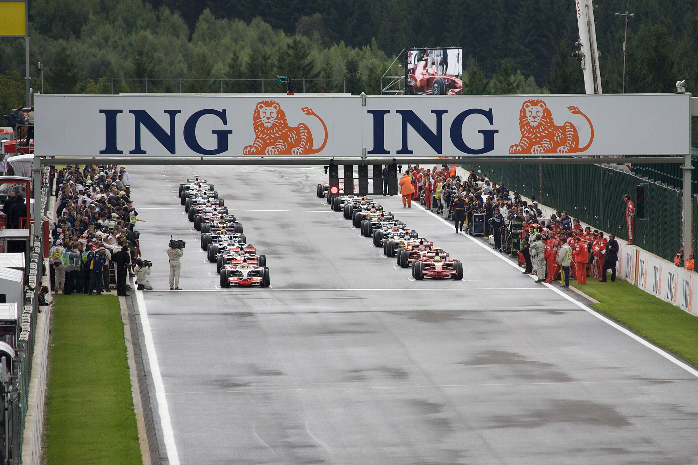
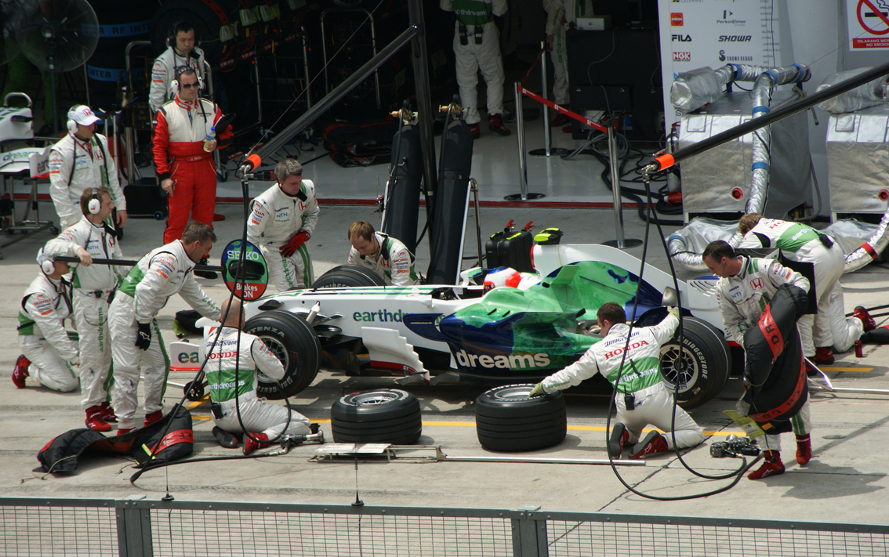
My data stops at 2023, but for context, here's this year's schedule. One oddity: the Bahrain Grand Prix is being held at Sepang in Malaysia this year.
| # | Grand Prix | Circuit | Country |
|---|
Everything covers the 2021, 2022 and 2023 seasons (66 races) and comes from two free sources:
Raw pulls and scripts are all in the repo:
First eight rows of the merged results, qualifying and pit stop data, before any cleaning.
The same rows after cleaning: DNF flag derived, grid 0 recoded, missing pit stop values resolved, grid_zone added.
The biggest gotcha was that Jolpica gives almost every driver a numeric finishing position, even if they retired, so I had to figure out who actually finished from the status text. Pit lane starts come through as grid 0, which would look like pole, so I recoded those to 21. When a value can't exist (like average pit stop time for someone who never stopped) I left it blank and added a flag column instead of making up a number. Full log from the cleaning script:
Twelve charts from the cleaned data. Hover for exact values, and use the season filter to look at one year at a time (charts 8, 11 and 12 always show all three seasons).
If I hide the team names, do three seasons of results still sort drivers into tiers? And if they do, are those tiers about the driver or the car?
Clustering is unsupervised learning, so there's no target column and no right answer to check against. The algorithm just sees rows of numbers and tries to put similar rows together and keep different rows apart. What "similar" means comes from the distance measure you pick, which honestly matters as much as the algorithm itself. Since nothing is labelled, clustering is more of a discovery tool. It tells you which groups exist, and then it's on you to figure out what they mean.
There are two main families. Partitional clustering (k-means is the classic one) splits the data into exactly k groups that don't overlap. You pick k, it drops k centroids, assigns every point to the closest one, moves each centroid to the mean of its points, and repeats until nothing moves. It's fast and simple, but you have to know k up front, the result depends on where the centroids start (so you run it a bunch of times), and since it minimises squared Euclidean distance it likes compact, roundish clusters. Hierarchical clustering doesn't need k ahead of time. The agglomerative version starts with every point as its own cluster and keeps merging the two closest ones until there's only one left. That whole merge history gets drawn as a tree called a dendrogram, and you can cut it at any height to get clusters. How you measure the distance between two clusters is the linkage: single (closest pair), complete (farthest pair), average (mean over all pairs) or Ward (smallest increase in variance).
I use two distance measures. Euclidean distance is the straight-line distance between two points, and it's what k-means uses. It cares about magnitude, so a driver with big numbers everywhere ends up far from one with small numbers everywhere. Cosine distance (1 minus cosine similarity) ignores length and only looks at direction, so two vectors pointing the same way are close to 0 apart no matter how long they are. On standardized data, that means cosine compares the shape of a season (which stats are above or below average relative to each other) instead of how extreme it was. My hierarchical clustering uses cosine with average linkage. I couldn't use Ward because it only works with Euclidean distance.
For me, clustering is a way to let the results talk before I tell any model what to predict. Each driver's season becomes one point with eleven numbers: average grid and finish, points, podium rate, points-finish rate, retirements, positions gained, pit stops, when the first stop happened, pit lane time, and grid penalties. If tiers show up, I can check whether a driver stays in the same tier after switching teams (which goes straight at the car vs driver question), and whether strategy stuff like stop timing splits the groups at all.
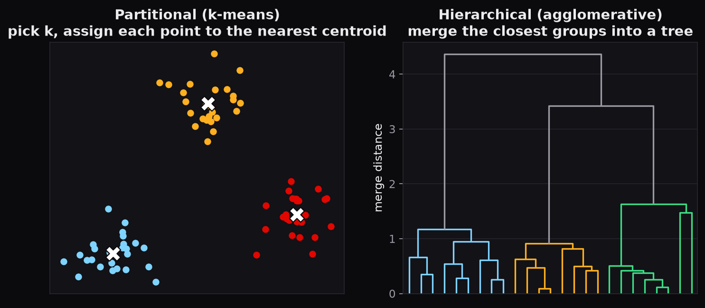
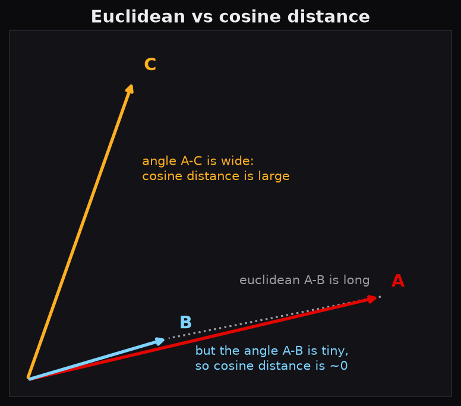
Clustering only works on unlabeled numeric data. Everything here is based on distances between rows, and there's no distance between "Red Bull" and "Ferrari". There's a second reason to drop labels too. If team or driver stayed in, the algorithm would just find them again, and the whole point is to see what groups show up without that info. So the labels get set aside and only come back at the end to help me read the clusters.
Starting from the cleaned driver-race table (1,320 rows):
First eight driver-seasons with labels and raw averages, built from the cleaned data.
Same eight rows with labels removed and every column standardized. This is exactly what k-means and hclust get.
Data used:
All Python, using scikit-learn and SciPy: code/clustering.py (on GitHub). It builds the profiles, runs k-means for k = 2 to 10 with 50 random starts each, scores every k with silhouette, runs agglomerative clustering with cosine distance, and makes all the figures on this tab. The main part:
X = StandardScaler().fit_transform(profiles[FEATURES])
for k in range(2, 11):
km = KMeans(n_clusters=k, n_init=50, random_state=42).fit(X)
sil.append(silhouette_score(X, km.labels_))
# hierarchical clustering with cosine distance
D = pdist(X, metric="cosine")
Z = linkage(D, method="average")
labels = fcluster(Z, k, criterion="maxclust")
ari = adjusted_rand_score(km_labels[k], hc_labels[k])
To rerun: python code/clustering.py (needs pandas, NumPy, scikit-learn, SciPy and matplotlib).
Silhouette checks, for each point, how much closer it is to its own cluster than to the next nearest one. It goes from −1 to 1 and higher is better. I ran k-means for k = 2 to 10, and silhouette is clearly highest at k = 2 (0.31). Everything from 3 to 10 sits between 0.16 and 0.20. The elbow plot agrees: the error drops the most going from 1 to 2 clusters and after that it just slides down with no obvious bend. So the strongest structure is one split into two groups. There are finer splits, they're just weaker.
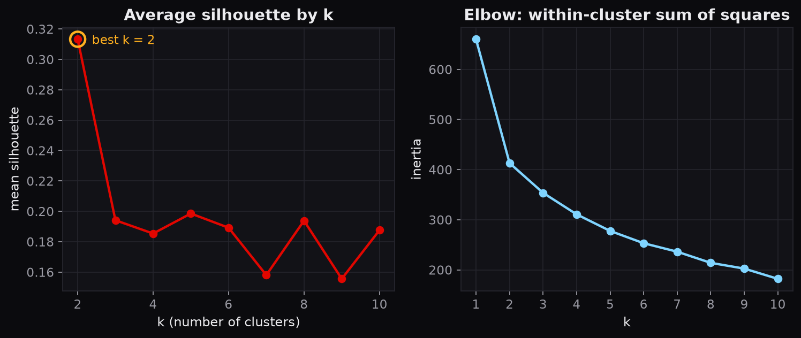
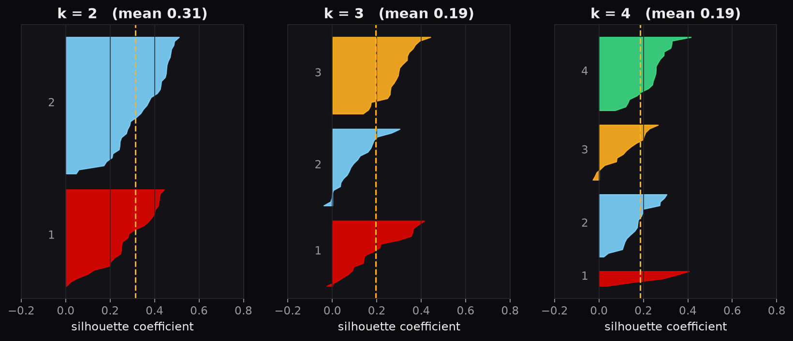
You can't plot eleven dimensions, so I squashed the profiles down to their first two principal components, which keep 64% of the variance (PCA gets its own tab next). PC1 is basically "how good was this season", with strong seasons on the left. Dots are coloured by team and each cluster is a shaded outline with its number on top.
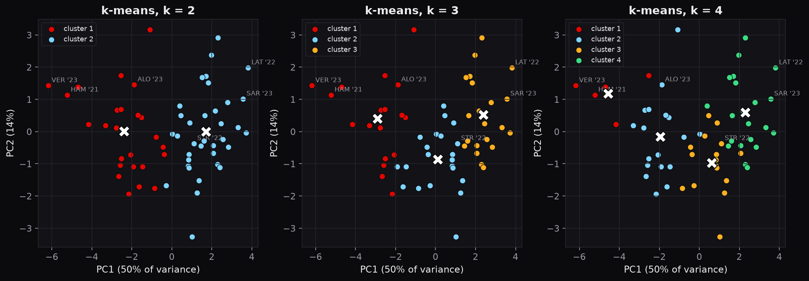
Average grid P4.4, finish P3.6, 18.2 points a race, on the podium 74% of the time and only 7% retirements.
VER '21, '22, '23 · HAM '21 · PER '23
Grid P6.4, finish P7.2, 8.9 points a race, scores in 81% of races. Mostly Ferrari, Mercedes and McLaren.
LEC, SAI, NOR, HAM '22-'23, RUS '22-'23, PER '21-'22, ALO '23
Start P12.2 but gain 2.1 places on average (the most of any group), finish P11.4 and score in 47% of races.
STR, OCO, VET, RIC, ALO '21-'22, GAS '23
Start P14.5, finish P14.4, score in just 16% of races. They also pit earliest (25% into the race) and have the slowest pit lane times (24.3 s).
TSU, ZHO, MAG, MSC, LAT, ALB, SAR, HUL, DEV
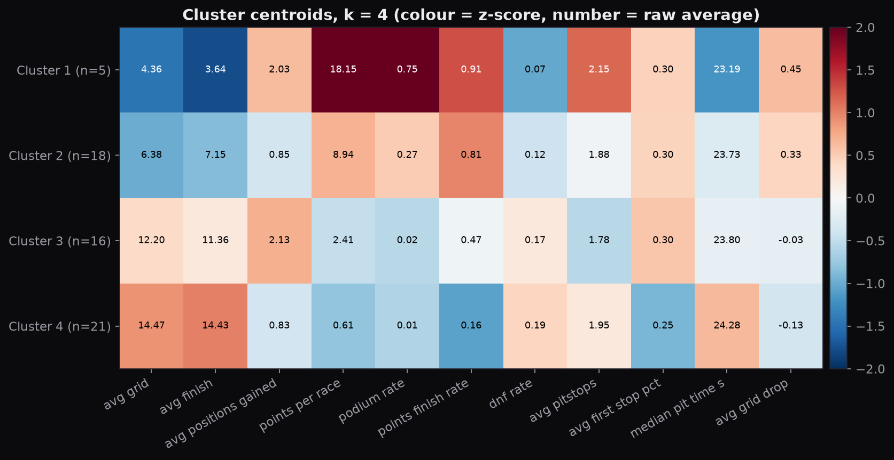
The dendrogram has all 60 driver-seasons merged with cosine distance and average linkage. The top merge is at a cosine distance of about 1.37 and joins two big branches that don't have much in common. The next one down is way lower (about 0.97). The biggest gap between merge heights is right below the top, so hclust suggests k = 2. Its own silhouette (with cosine distance) also peaks at k = 2 (0.50).
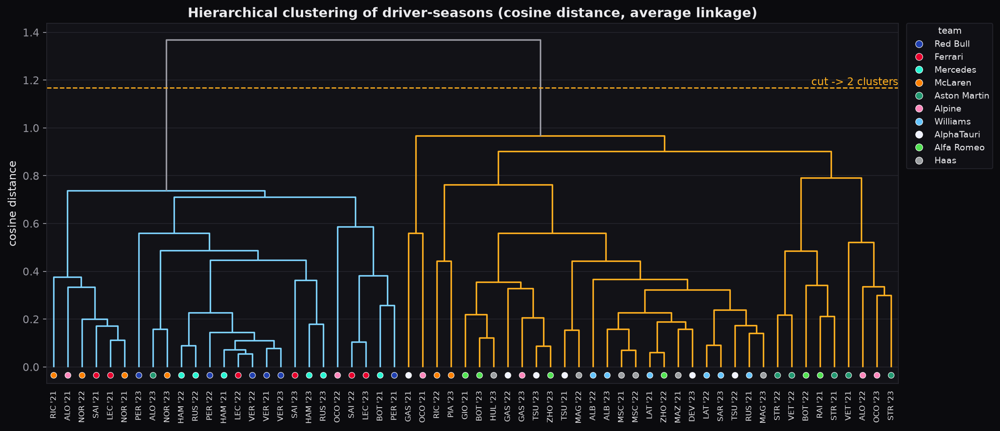
At k = 2 the two methods agree perfectly. The same 25 driver-seasons end up in the top group both times, so the adjusted Rand index (ARI) is 1.00. That's a big deal because they measure similarity in different ways (Euclidean for k-means, cosine for hclust), so the top vs rest split isn't just a quirk of one method.
Past k = 2 they split up, and the way they disagree is actually interesting. At k = 4 (ARI 0.59), k-means divides the strong group by how much stronger it was and pulls out the five title-pace seasons. Hclust with cosine keeps all 25 strong seasons together, because a dominant season and a decent one point the same direction, one's just longer. Instead hclust splits the weaker group by shape. A 9-season midfield branch that scored in 44% of races (Stroll and Vettel at Aston Martin, plus ALO '22, OCO '23, RAI '21 and BOT '22) breaks away from 24 backmarker seasons that scored in only 18%, and GAS '21 and OCO '21 end up as their own little pair.
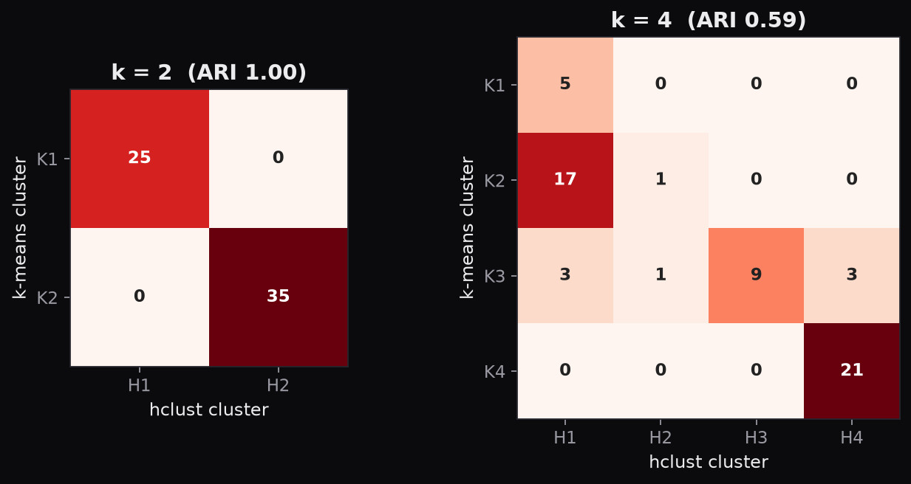
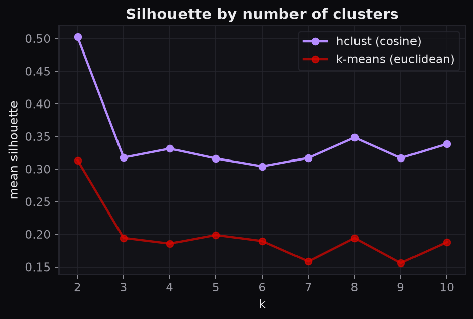
Without knowing anything about teams, both methods found the same basic divide in F1 from 2021 to 2023: about 25 driver-seasons that regularly scored and 35 that mostly didn't. That's the strongest structure in the data, and two completely different similarity measures agree on it exactly. Inside the top group, k-means pulled out a small title-pace tier (all three Verstappen seasons, Hamilton in 2021 and Pérez in 2023) that stands apart even from the other front-runners. Anyone who watched 2021 won't be surprised Max and Lewis are in there together.
The best evidence on car vs driver is what happens when someone changes cars. Russell was a backmarker at Williams in 2021 and a regular podium threat straight away after moving to Mercedes in 2022. Alonso was a midfield climber in both Alpine seasons, then jumped straight into the podium group in year one at Aston Martin. Gasly went the other way, podium group in 2021 to backmarkers in 2022 without even changing team, because the AlphaTauri just got worse. Teammates share a cluster in 25 of the 30 team-seasons at k = 2, and at k = 4 they're either in the same cluster (19 times) or next door (9 times). So the groups follow the car way more than the name, which lines up with the big team effect on the EDA tab. The driver still shows up at the edges though. Verstappen was title pace in 2021 and 2022 while Pérez in the same Red Bull was a tier below, and Hamilton was a tier above Bottas in 2021.
Strategy splits the groups a lot less than results do. Stop counts are almost the same in every cluster (about 1.8 to 2.2 a race). What is different is that backmarkers pit earliest and have the slowest pit lane times, and the midfield climbers gain the most places, more than the podium group does. My read is that strategy and racecraft matter most in the midfield, where the cars are close, and a lot less at the front, where grid and car pace already decide most of it. That's something I can test properly with the supervised models later on.
I record thirteen numbers for every driver's race. How many of them are actually telling me something new?
Principal Component Analysis (PCA) describes data with fewer variables while losing as little information as possible. It finds new axes, called principal components, that are weighted combinations of the original variables. PC1 is the direction where the data is most spread out. PC2 is the direction with the most spread left over that's at a right angle to PC1, PC3 is at a right angle to both, and so on. You get as many components as you had variables, but they're sorted by how much variance they capture, so the first few usually hold most of the information. Keeping just those and throwing out the rest is dimensionality reduction.
Under the hood it's all eigenvectors and eigenvalues. Once the data is standardized, PCA builds the covariance matrix, a square table of how every pair of variables moves together. An eigenvector of that matrix is a direction the matrix only stretches and never rotates. Multiply the matrix by it and you get the same vector back, just scaled by a number, and that number is the eigenvalue (Cv = λv). Each eigenvector is one principal component and gives you the direction. Its entries are the loadings, which tell you how much each original variable contributes. The eigenvalue tells you how much variance lies along that direction, and dividing it by the sum of all the eigenvalues gives the share of variance that component explains. The covariance matrix is symmetric, so its eigenvectors are all at right angles, and that's why the components come out uncorrelated. If an eigenvalue is exactly zero, there's no spread in that direction at all, which happens when one variable can be calculated perfectly from the others.
Why bother? High-dimensional data causes real problems. You can't plot more than three axes, so patterns stay hidden. A lot of variables end up redundant (in F1, qualifying position, grid slot and finishing position mostly say the same thing), and correlated inputs make models like regression unstable. Distances also start acting weird. As you add dimensions, the nearest and farthest neighbours of a point end up almost the same distance away, which messes with anything distance-based, including the clustering on the last tab. That's the curse of dimensionality. More dimensions also means you need more data to fill the space, you're more likely to overfit, and everything takes longer to compute. PCA swaps lots of correlated variables for a few uncorrelated components that keep most of the variance. That makes the data easier to plot, pushes noise into the small components, and gives later models a compact set of inputs that don't repeat each other.
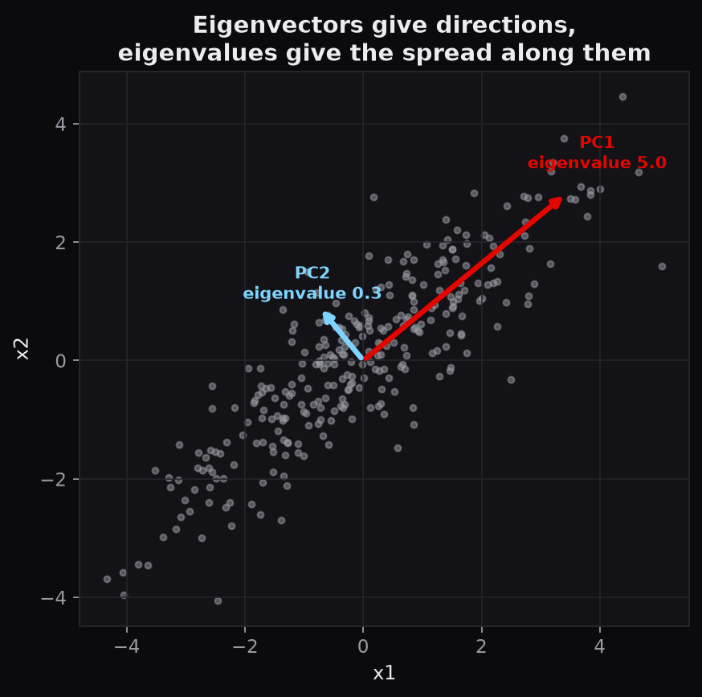
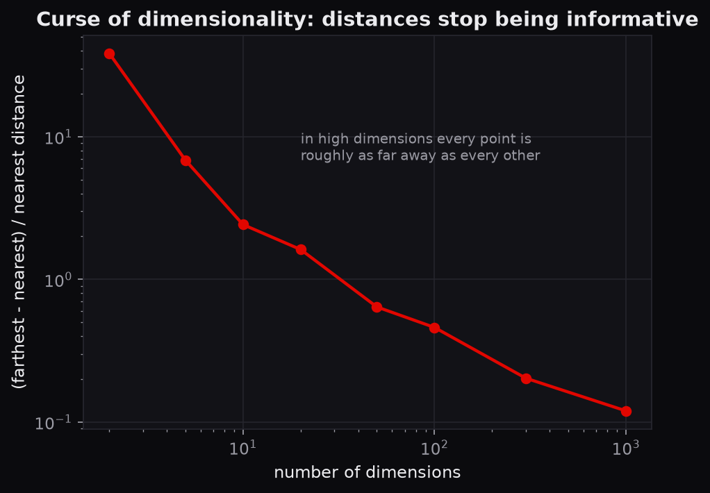
For this project, PCA answers a practical question: out of the thirteen numbers I have for each driver's race, how many different kinds of information are really in there, and which variables go together?
PCA needs numeric, unlabeled data with no missing values, and in practice it needs it standardized too. It's built on variances and covariances, so text labels are out, and a missing value doesn't have a position in space. Standardizing (mean 0, SD 1 for every column) matters because PCA chases variance. Without it, track temperature (tens of degrees) would dominate a share-of-race variable that goes from 0 to 1, purely because of units. After scaling, PCA is basically working on the correlation matrix and every variable starts even.
This time each row is one driver in one race, so there are a lot more rows than on the clustering tab. Steps:
First eight rows (2021 Bahrain, same drivers as the cleaned table on the Data Prep tab) with labels and the thirteen measurements in raw units.
Same rows with labels removed and all thirteen columns standardized to mean 0 and SD 1.
Data used:
Python with scikit-learn: code/pca.py (on GitHub). It preps the data, fits PCA with all the components so I get every eigenvalue, and makes all the figures on this tab. The main part:
X = StandardScaler().fit_transform(data[FEATURES]) pca = PCA().fit(X) eig = pca.explained_variance_ var = pca.explained_variance_ratio_ cum = np.cumsum(var) n95 = np.searchsorted(cum, 0.95) + 1 scores = pca.transform(X) loadings = pd.DataFrame(pca.components_.T, index=FEATURES, columns=pcs) corr = loadings * np.sqrt(eig)
To rerun: python code/pca.py.
The first four eigenvalues are 3.30, 2.26, 1.96 and 1.86, then it drops to 0.94 and below. Since the data is standardized, every original variable has a variance of 1, so a component with an eigenvalue above 1 holds more than any single variable does. Four components pass that (the Kaiser rule) and together they keep 72% of the variance: PC1 25%, PC2 17%, PC3 15%, PC4 14%. Getting to 95% takes nine. The last eigenvalue is exactly 0, and that's on me: positions gained is literally grid minus finish, so that direction has zero spread.
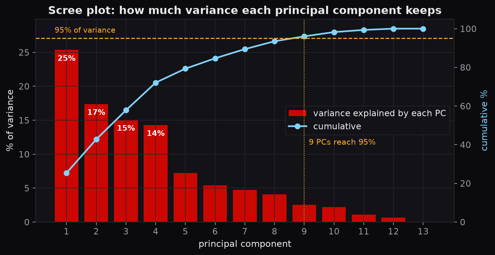
The loadings (the entries of each eigenvector) show which variables make up each component. Big values, positive or negative, matter. Anything near 0 doesn't.
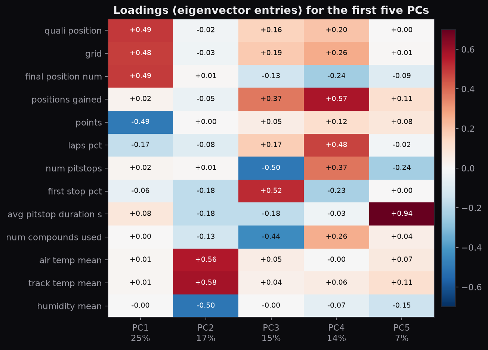
A biplot shows the rows and the variables together. Each dot is a driver-race placed by its PC1 and PC2 scores, and each arrow is a variable's loading. Arrows pointing the same way are positively correlated, opposite ones are negatively correlated, and arrows at right angles are unrelated. Longer arrow means that variable is better captured by these two axes. Here the result variables lie flat along PC1, the weather ones stand straight up on PC2, and the two groups are at right angles.
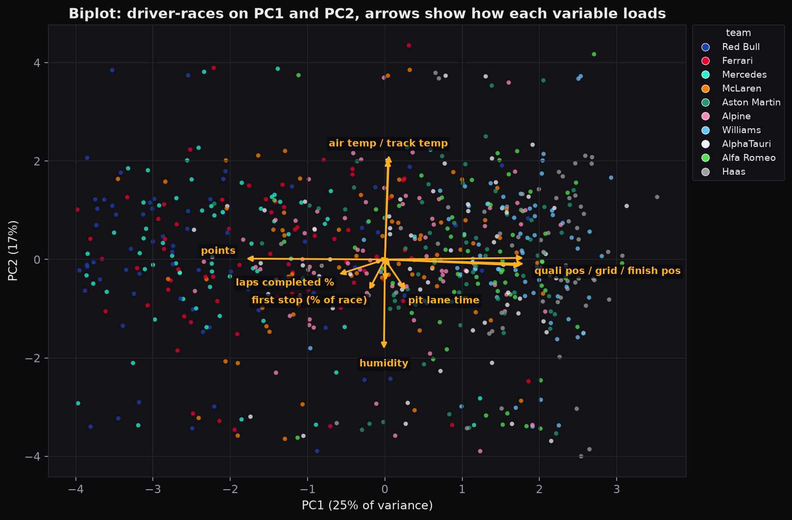
Correlation circles show the same thing without the dots. Each arrow's coordinates are the correlation between a variable and the two components, so an arrow that reaches the circle is almost fully explained by those two PCs. The PC3/PC4 circle shows the strategy variables that were hiding in the first one.
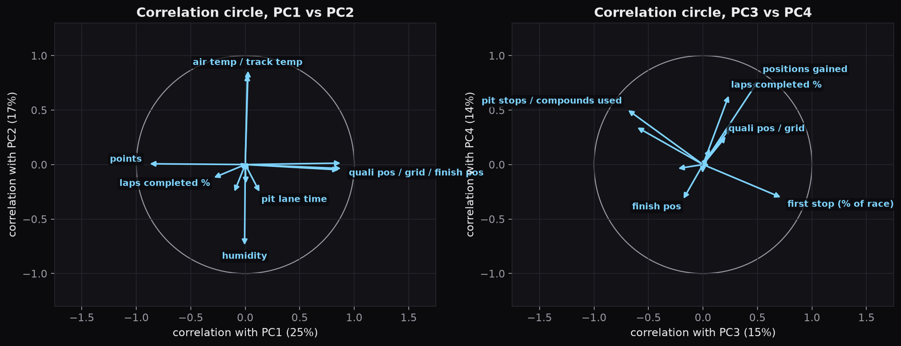
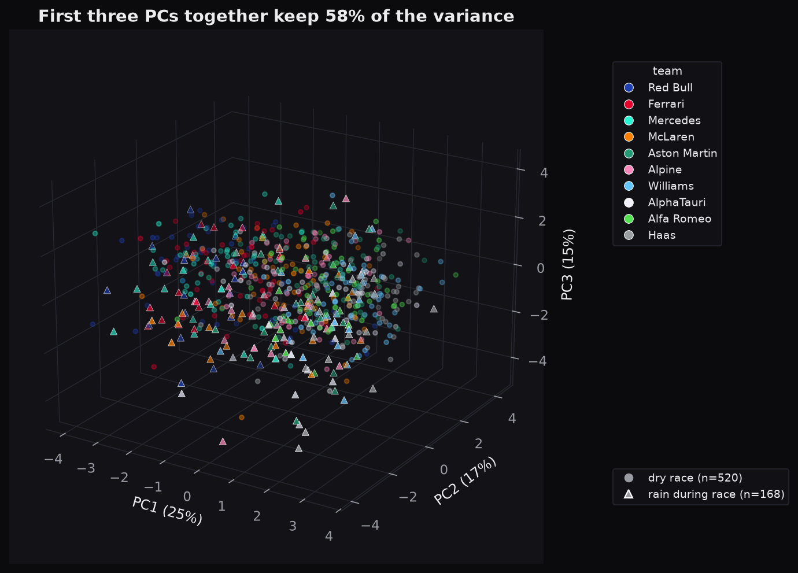
The biggest source of variation in a driver's race is just where they ended up, and you can't really separate that from where they qualified and started. Qualifying, grid, finish and points all collapse onto one component. That backs up the 0.73 grid-finish correlation from the EDA tab and the clustering result that the field splits mostly by results. In these three seasons, Sunday mostly confirmed whatever Saturday set up.
Everything else a race depends on turns out to be separate from that. Weather is its own component at right angles to the result, so hot or humid races didn't consistently help the front or the back. Pit strategy is a third independent component and recovering places is a fourth. None of them overlap with the result or each other, which is good news for the models coming later, because it means I can't just throw out strategy and conditions as "already covered by grid position". They do add information. Each one just explains a lot less variance than the result axis, which fits with how small the stop count effect looked on the EDA tab.
Two practical takeaways for the next milestones. First, qualifying, grid and finish shouldn't all go into a model as separate predictors since they're close to collinear. Second, about four components (or one variable from each group) cover most of what the thirteen measurements say. Rain also stood out on PC3, tying wet races to more stops and more compounds, so that's a natural thing to test on the Naive Bayes and decision tree tabs.
Not started yet.
Not started yet.
Not started yet.
Not started yet.
Not started yet.
Not started yet.
MS Data Science student, CU Boulder
Nivid is a graduate student in the Data Science program at CU Boulder, graduating in May 2027. He completed his undergraduate degree at Nirma University in Ahmedabad before moving to Boulder for his master's. His work covers machine learning, regression modeling, and evaluating AI tools. This fall he is a Course Assistant for three intro data science courses. Outside the classroom, Nivid follows Formula 1 and plays cricket on weekends.